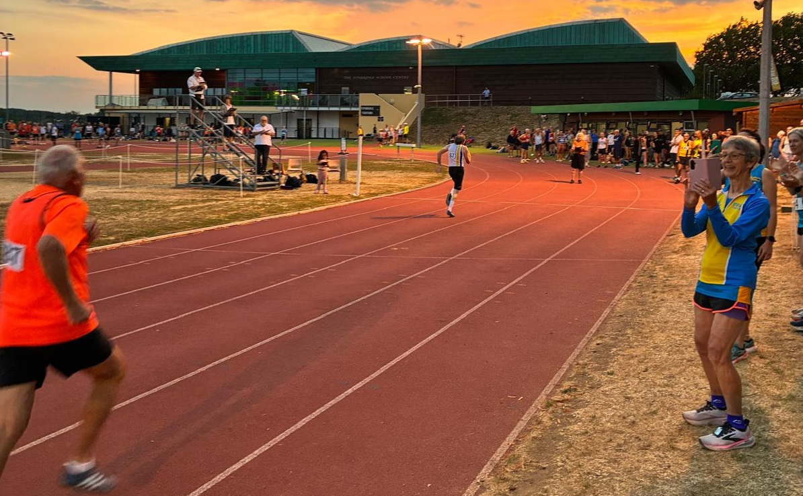

Sevenoaks AC men came 2nd at the final meeting of the SCVAC T&F league 2026, a great result, even beating Tonbridge B on home turf according to the draft results (which may have missed out the discus).
There were Div 2 victories by Jamie, only just shy of his 800 M45 club best, Rebecca over 800m W50, Oloff in 800m M50, Seb with a PB in triple jump M50 and Geoffrey in the 100m M70 (Oloff said: "Never thought it was possible to win the 100m by a country mile, but Geoffrey came close tonight.")

The mens team qualified for promotion to Div 1, this being the last match in the 2026 series, but there was a notional 'paper' play off between ourselves and Ashford AC who were potentially liable to be demoted from Division 1, and Ashford are deemed to have won this. They stay in Div 1 and we stay in Div 2. Nevertheless a best performance for us for, I think, 20 years.
Jamie said: "Thanks for all you organising and effort Geoffrey and well done to all. A successful season despite no promotion. Medway and Maidstone are coming down so will be stiff running competition in Division 2 next year."